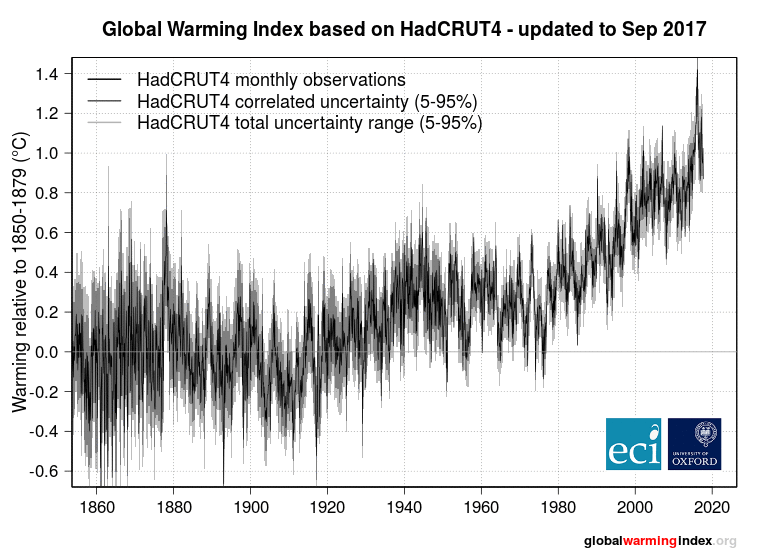

What is human-induced warming?
The globalwarmingindex.org website shows an up-to-the-second
index of human-induced warming relative to the second half of the 19th century (1850-1900) based on the standard "detection and attribution" approach introduced
by Hasselmann (1997), first introduced in
Otto et al. (2015) and published with a comprehensive
uncertainty analysis in Haustein et al. (2017).
The authors affiliations are as follows:
Karsten Haustein, Postdoctoral Researcher, Environmental Change Institute, University of Oxford, UK (@khaustein)
Myles R Allen, Professor of Geosystem Science, Environmental Change Institute, University of Oxford, UK.
Piers M Forster, Director Priestley International Centre for Climate, University of Leeds, UK (@piersforster)
Friederike E L Otto, Deputy Director Environmental Change Institute, University of Oxford, UK (@frediotto)
Daniel M Mitchell, Proleptic Lecturer, School of Geographical Sciences, University of Bristol (@climatedann)
H Damon Matthews, Professor and Concordia Research Chair, Department of Geography Planning and Environment, Concordia University Montreal (@damon_matthews)
David J Frame, Director New Zealand Climate Change Research Institute, School of Geography, Environment and Earth Sciences, Victoria University of Wellington.
The index estimates contributions to observed climate change and removes the impact of natural year-to-year fluctuations, by a simple least-squares-fit between observed temperatures provided by four different research centers (UK Met Office; Cowtan and Way; NOAA; NASA; black line) at the end of every month and estimated responses to human-induced and natural drivers of climate change (orange and blue lines). The forcing responses are provided by the standard simple climate model given in Chapter 8 of IPCC (2013), but the size of these responses (and so the climate sensitivity) is estimated by the fit to the observations. The animated image below demonstrates the methodology that we apply to obtain the final Global Warming Index.

Animation of the main steps needed to estimate the Global Warming Index. The first and second step shows observations and natural and anthropogenic foring estimates (W/m2), including 200 different realisations that comprise the full forcing uncertainty. The third step is the application of the response model which converts forcing in a fast and slow temperature equivalent as a function of the best estimate for TCR, ECS and the response times. In the fourth and fifth step, the sum of the two responses before regression with the observed temperature is shown together with the resulting combined temperature response (red). The sixth step is the same response after multiplying it with the slope provided by the the least-square-fit between temperature and natural/anthropogenic response. Finally, the full uncertainty range for the natural and the human-induced contributions is estimated and added to the graph.
The plumes in the Global Warming Index show the 5-95% ranges in estimated human-induced and natural warming due to uncertainties in UK observations (100 possible variations), forcing (200 possible variations) and response model (20 possible variations). The forcing shape uncertainty is estimated using a Monte Carlo method as applied in Box 9.2 in Chapter 9 of IPCC (2013) and further detailed in Forster et al 2013. The response model uncertainty covers a wide range of TCR/ECS (Transient Climate Response/Equilibrium Climate Sensitivity) ratios as well as fast response times. The contribution to the overall uncertainty is small, however. Instead, the total uncertainty is dominated by the forcing uncertainty.
A supplementary speadsheet to calculate the monthly index with data up to the lastest months is available for download here.
As shown in the second plot on the main page, we have expressed the total effect of other human influences on climate by how much they reduce outgoing energy, in units of Watts per square metre (W/m2). Added up over the entire planet, 1 W/m2 from these other influences has approximately the same impact on global temperature as the emission of 1 trillion tonnes of carbon dioxide (CO2). Hence total carbon dioxide emissions in trillion tonnes of CO2 plus other human influences in W/m2, all multiplied by the “Transient Climate Response to Emissions” (approximately 0.4°C/TtCO2), gives total human-induced warming. The carbon dioxide emissions counter uses the most recent update of the Global Carbon Project’s Global Carbon Budget, available here. Human-induced warming and radiative forcing are expressed relative to the 1850-1900 period and CO2 emissions are cumulative from 1875.
In addition, the choice of the observational data set and the reference period have a noticeable impact on the results. While initially, the GWI was expressed relative to the 30-year average of the standard reference period 1850-1879, which is characterised by little volcanic activity, and hence comparable to the most recent 25 years, the IPCC is using a alternative, longer reference period from 1850-1900. Because of that, GWI now uses the same 1850-1900 baseline. Since this period is affected by the Krakatoa eruption, both the human-induced warming fraction and the and natural contribution are notably different as illustrated in the figure below. However, the uncertainty due to different observational datasets is considerably higher. While this may not be a problem in the longer term as datasets are further refined, there have (cool) been biases due the missing coverage of the rapidly warming Arctic areas, which is still the case in the version of NOAA-MLOST used here. We note that the UK Met Office has updated their global temperature dataset HadCRUT4 to HadCRUT5 at the end of 2020, which led to a notable increase in the GWI as HadCRUT5 covers the Arctic. To reflect these uncertainties, the IPCC is using the aggregate average of four common global mean temperature datasets: HadCRUT4 (now replaced by HadCRUT5), HadCRUT4-Cowtan/Way, NOAA-MLOST and NASA GISTEMP. For the current version of the GWI, we adopted the IPCC approach and provide the estimate for the human-induced warming based on those four dataset.

Top row: GWI based on HadCRUT4 and the standard 1850-79 reference period (left), or the longer 1850-1900 alternative reference period. Bottom row: As top row but using HadCRUT4-Cowtan/Way as observational data set. It covers remote polar regions which have seen stronger warming in recent years, leading to a higher fraction of human-induced attributable warming.
We note that the monthly index uncertainty range is +/-0.0013K (95% confidence level). By this we refer to the uncertainty introduced by adding a new datapoint to the observed monthly temperature, or, in other words, it is the monthly variability of the Global Warming Index.
Relevant Papers
Haustein, K. et al. (2017). A global warming index. Nature Scientific Reports, doi:10.1038/s41598-017-14828-5
Otto, F.E.L. et al. (2015). Embracing uncertainty in climate change policy. Nature Climate Change, doi:10.1038/nclimate2716
Forster, P. et al. (2013). Evaluating adjusted forcing and model spread for historical and future scenarios in the CMIP5 generation of climate models.
Journal of Geophysical Research, 118, 1-12, doi:10.1002/jgrd.50174
Hasselmann, K. (1997). Multi-pattern fingerprint method for detection and attribution of climate change. Climate Dynamics, 13(9), 601-611